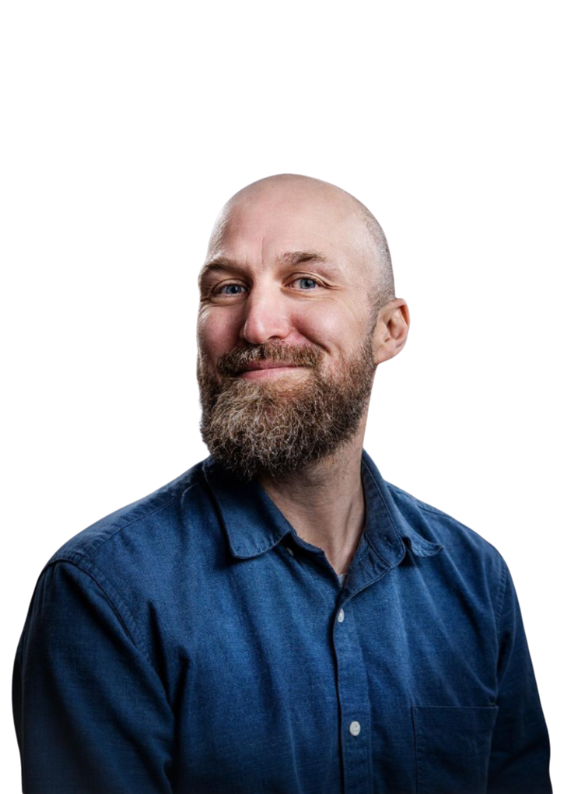
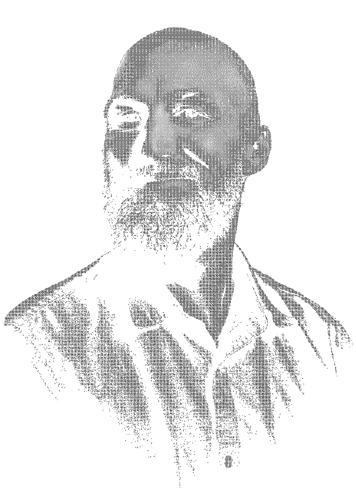

Studio Hannes is my one-man design studio specializing in products, furniture and digital design. Equally comfortable with wood, concrete, pixels & code, I have a passion for 3D design, visualization, and helping people bring their ideas to life.
My clients might have a vague idea or beginning of a great concept in mind — it’s sketched on paper, developed on screen, and ultimately built in real life. It’s a surprisingly complex process that often calls for a wide range of tools and techniques, from 3D modeling to printing or more advanced prototyping. Each stage offers a chance to catch costly mistakes, clarify the vision, and uncover new challenges ahead.
My methods are iterative, flexible and thorough — listening closely, envisioning solutions together with my clients, and working with passion and determination. I approach projects from an end user’s point of view, while respecting the boundaries of manufacturing and logistics. Great user experiences are built upon great products and services, carefully crafted on top of well-thought-out concepts.
Always looking for interesting projects, people, and opportunities to collaborate. Eager to dive into tricky challenges and ready to travel any distance, learn new tools, or help you find the right people and team to make it happen.
Hannes is my name, and solving problems is what I do. Product designer and fine woodworker by training and self-taught software developer by passion. I spent some time dabbling in UX/UI along the way. This mix lets me bridge physical and digital craftsmanship seamlessly.
I’m easily approachable, weirdly sociable for a Finn, and very comfortable in international waters. As a designer, I feel at home in almost any industry and love solving problems in multidisciplinary teams.
As a reserve officer and former scout leader, I don’t shy away from responsibility or leadership either. Over the years, I’ve been active in many kinds of organizations — motivating people, supporting teams, and helping bring out the best in others. I bring wholehearted enthusiasm and commitment to every project I join.
Honest communication and thinking outside the box aren’t just nice-to-haves — they’re essential parts of who I am. Currently working on complex modular concrete structures and eager to hear your crazy visions and pain points to solve.


Work. Our portfolio reflects a range of projects—some public, some confidential. What connects them is a commitment to craft and a focus on the people who will use what we make.
Recent work includes furniture for private clients, product design for Finnish manufacturers, and digital products for startups. Each project starts with research and ends with something tangible: an object, an interface, or a system that works in the real world.
We're selective about what we take on. We choose projects where we can add genuine value and where the collaboration feels right. If that sounds like a fit, get in touch.
Skills cover the arc from material craft to digital delivery: fine woodworking, product and furniture design, CAD and visualization, UX/UI, and hands-on software development.
Whether the output is a physical piece, a configured product family, or a shipped digital experience, I pick tools to match the problem — and learn new ones when the work calls for it.
Philosophy behind my work can be summarized like this: form follows function, timeless beats trendy, quality over mediocrity. Long-term business models and honest processes always trump short-term gains and shenanigans. I aim to build endurance — in products and the businesses behind them.
Good design solves real problems and lasts. It respects budgets, physics, and daily users — not just render perfection. True beauty comes from what works: durability over flash, clarity over complexity, substance first.
That’s why every project starts with hard questions about use cases, costs, and constraints. Trends are secondary — I’ll weave them in if they fit, but they never lead. If you’re building to endure, not just impress, this is how we roll.
Contact me, if you need help with making your vision reality.
For new projects, collaborations, or a conversation about design, reach out by email. We respond to all serious inquiries, usually within a few days.
We're based in Helsinki but work with clients locally and internationally. Video calls work well for discovery and ideation; in-person meetings happen when it makes sense.
If you have a project in mind, tell us about it. The more context you share, the better we can assess fit and suggest next steps.